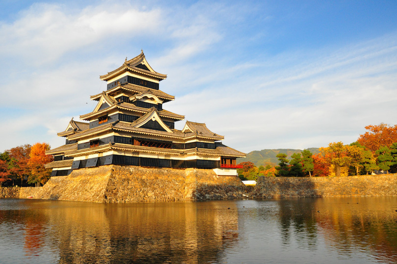

The first type were recruits-based armies: at the beginning, during the Nara period, samurai armies relied on armies of Chinese-type recruits and towards the end in infantry units composed of ashigaru. The second type of organization was that of a samurai on horseback who fought individually or in small groups.
At the beginning of the contest, a series of bulbous-headed arrows were shot, which buzzed in the air. The purpose of these shots was to call the kami to witness the displays of courage that were about to unfold. After a brief exchange of arrows between the two sides, a contest called ikkiuchi (一 騎 討 ち) was developed, where great rivals on both sides faced each other. After these individual combats, the major combats were given way, usually sending infantry troops led by samurai on horseback. At the beginning of the samurai battles, it was an honor to be the first to enter battle. This changed in the Sengoku period with the introduction of the arquebus.
At the beginning of the use of firearms, the combat methodology was as follows: at the beginning an exchange of arquebus shots was made at a distance of approximately 100 meters; when the time was right, the ashigaru spearmen were ordered to advance and finally the samurai would attack, either on foot or on horseback. The army chief would sit in a scissor chair inside a semi-open tent called maku, which exhibited its respective mon and represented the bakufu, "government from the maku."
In the middle of the contest, some samurai decided to get off the horse and seek to cut off the head of a worthy rival. This act was considered an honor. Through it they gained respect among the military class. After the battle, the high-ranking samurai normally celebrated with a tea ceremony, and the victorious general reviewed the heads of the most important members of the enemy which had been cut.
Most of the battles were not resolved in the ideal manner mentioned above. Most wars were won through surprise attacks, such as night raids, fires, etc. The renowned samurai Minamoto no Tametomo said:
According to my experience, there is nothing more advantageous when it comes to crushing the enemy than a night attack [...]. If we set fire to three of the sides and close the passage through the room, those who flee from the flames will be shot down by arrows, and those who seek to escape from them will not be able to flee from the flames."
